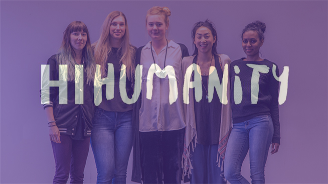

#HiHumanity www.hihumanity.se is an evolving initiative where me and four other girls from Hyper Island are working on a variety of projects, tied together by our aim to make the world more humane.
We started this initiative from scratch and have been doing all the ideation, planning, art direction, networking and raising awareness ourselves.
One of out main project was called The Auction, it was an online auction where companies could bid to win a full day workshop of their choosing. The winning sum was donated to charity. The workshops were for anyone who wanted to apply creative collaboration to unleash potential in their team or organisation, big or small. It was a collection of methods and activities, based on Hyper Island’s core methodology.
During The Auction we pitched at Cocoaheads sthlm meetups and the project also gained recognition from the Swedish design magazine CAP&Design
http://capdesign.se/ett-humant-studentprojekt/.
My Role
Planning
Raising awareness
Tools & Techniques
Mailchimp


At CocoaHeads Stockholm meetup, spreading the word.